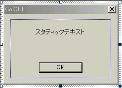
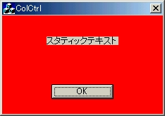
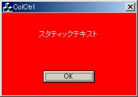
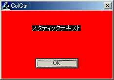

スタティックコントロールは，ダイアログ上でユーザに変更されない文字列等を指す．スタティックコントロールの描画色を変更するのは比較的簡単である．以下の手順で描画色を変更していこう．
| ●スタティックコントロールの描画色を変更する |
スタティックコントロールの色の構成を見ていくために，とりあえずテストコーディングを行ってみる．
Dialogの中のIDD_COLCTRL_DIALOGをダブルクリックで開く．
 
figure3.1 リソースの編集 figure3.2 実行結果この実行結果が表す重要なことは，ダイアログの背景色がいくら赤いとはいえ，スタティックコントロールの背景色とダイアログの背景色は全く無関係 であるということだ．それでは，スティックコントロールの背景色をダイアログと同じ赤色に，そしてテキストの色を 白色にしていくことにする．
ColCtrlDlg.cpp内のOnInitDialog関数で，さきほど追加したメンバ変数のカラーを作る．
OnCtlColor関数を以下のように修正する．
 
figure3.3 実行結果 figure3.4 スタティック背景色を変えてみる実行すると，figure3.3のようにスタティックコントロールの背景もしっかり赤になり，テキスト色は白色になっている．なぜ変更できたのかはCDCクラスのメンバ関数を考えればすぐわかる．
- pDC->SetBkMode(TRANSPARENT)
- 「テキストが書かれている部分」の背景色を透明にする．透明なブラシ(そんなものは現実には無いのであるが)で塗りつぶすということは，ダイアログの背景色が透けて見えることになることにつながる．
- pDC->SetTextColor(COLORREF color)
- 「テキスト自体」の色をcolorに設定する．
重要なことは， テキストが書かれている部分の背景色を透過状態にしたからといってもNULL以外のブラシハンドルを返さなくてはDCの変更は認識されないので，とりあえずダイアログで指定したブラシと同じ物を返しておくことにする．
いわばNULLでないブラシだったら何を返しても別に構わない．ダイアログの背景色を指定したブラシで，スタティックの背景を変えているわけではないので 注意してほしい．
先ほどは，ダイアログの背景とテキストの背景を同じにする場合について述べた．この場合の方が一般的なのであるが，人によってはダイアログの背景色とテキストの背景色を変更したい場合もあるだろう．これに関してはあまり詳しく説明しないが，以下のようにコーディングしてみてほしい．
- pDC->SetBkMode(TRANSPARENT)
- 「テキストが書かれている部分」の背景色を，SetBkColor関数で設定した色で塗りつぶす．
- pDC->SetBkColor(COLORREF color)
- テキストが書かれている部分」の背景色をcolorに設定する．
これを実行すると，figure3.4のようにスタティックコントロールの背景は黒になる．しかし関数内部で返したブラシはダイアログの背景の時に作成した赤のブラシである．これからも分かるとおり， スタティックコントロールの背景色は，ブラシで決まるのではないということである．是非注意してほしい．
←Back［ダイアログの背景色の変更］ -- Up［コントロールの背景色を変更する］ -- Forward［エディットコントロール］→
VisualC++でソフトを作ろう (c) 藤門千明